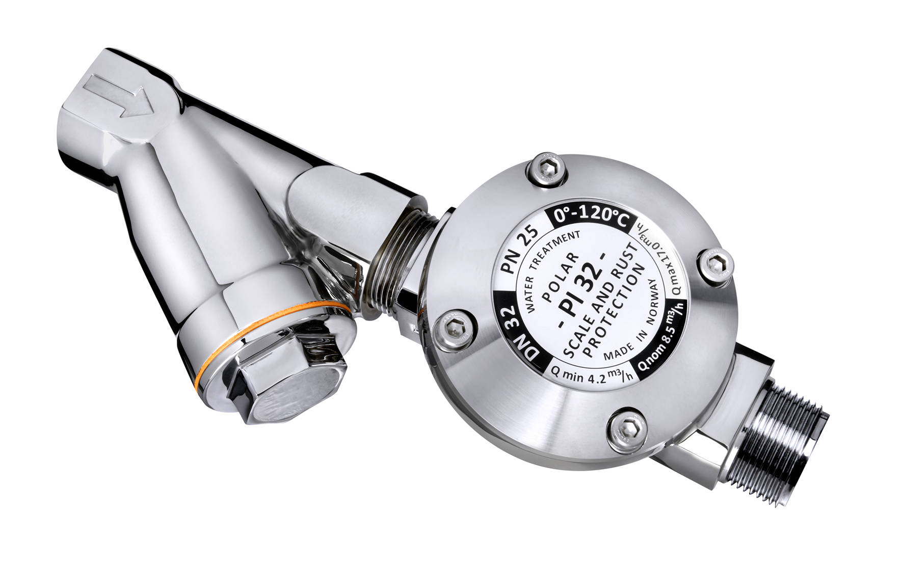
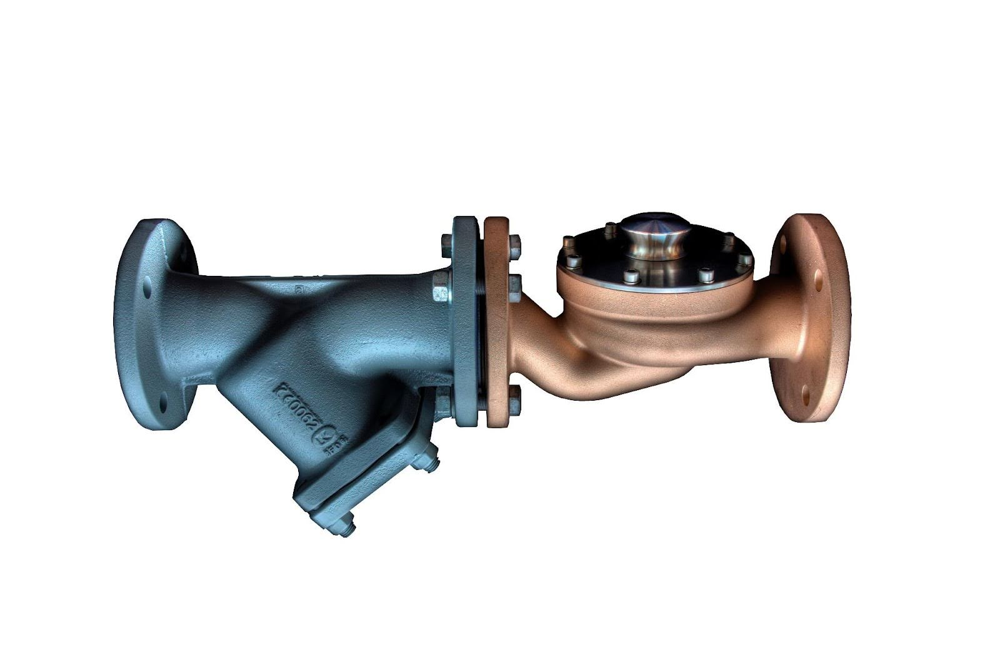
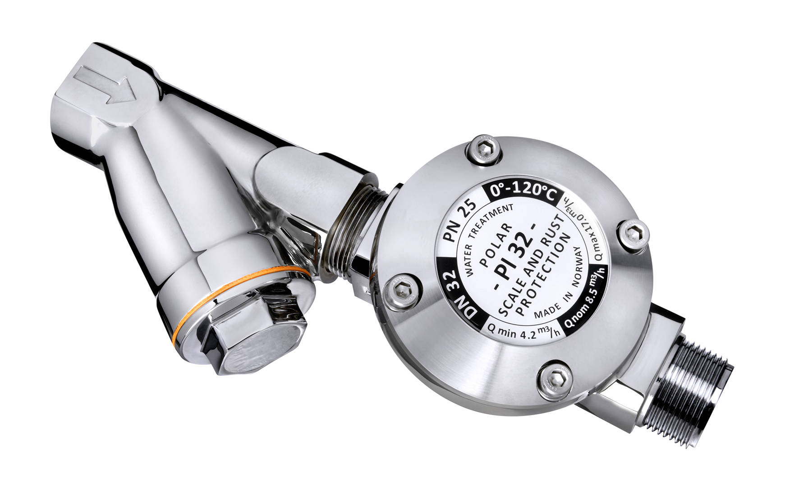
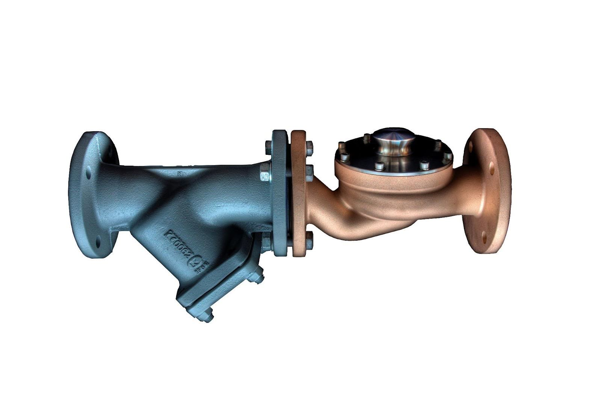

Polar corrosion protection for cold and hot water pipe
air-conditioning system.
Still running strong after 17 years and 5 months.
Source: POLAR NEWS NO.51, (translated with DeepL.com) from
Polar-distributor Nippon-Selpo in Japan
A large home-centre / large block of flats
October 2002 (17 years and 5 months have passed since installation at new build)
Rust prevention measures for newly installed air conditioning cold and hot water equipment
POLAR Model: PI-20CF (20A) installed for cold/hot water, 5%
partial support method from outgoing pipe to return pipe (no pump
required)
Treatment water volume: Treats over 5% of cold/hot water
circulating water volume
Photo of hot and cold water pipes after 17 years and 5 months of
Polar treatment since new construction.
Due to the anti-corrosion effect of Polar, there is no vorrosion
on the inside of the pipes and they are covered with an extremely
thin, dense and uniform anti-rust film containing minerals. This
film prevents corrosion by blocking the reaction (corrosion)
between oxygen and iron in the water. Expected remaining service
life: More than 20 years (due to continuous POLAR treatment).
The equipment contractor who carried out the reneweal work
was suprised that he had never seen hot and cold water pipes so
clean after more than 17 years.
This is a picture of the inside of a hot and cold water-pipe at
another location the same client came to consult with
us.(Reference image)
Rust bumbps appear on the entire surface and if the progress of
the rust is not controlled, it will lead to pipe blockages, holes
and water leaks.
Expected remaining service life: If untreated, there is a high
possibility of problems within a few years.
Air conditioning pipes for cold and hot water are laid out
throughout the building. Corrosive water damages piping,
machinery, valves, vents, etc., reducing lifetime,
thermal-efficiency, and negatively impacting electricity and fuel
costs, leading to a wasteful decline in asset value.
The POLAR treatment exerts its anti-corrosion effect by forming a
film on the rust nodes even when significant rust has formed.
Installing POLAR before a serious situation develops will extend
system lifetime.
As of Sept 2011: Total number of Polar-units installed: more than 5,000